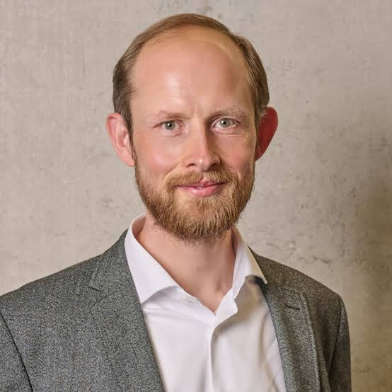
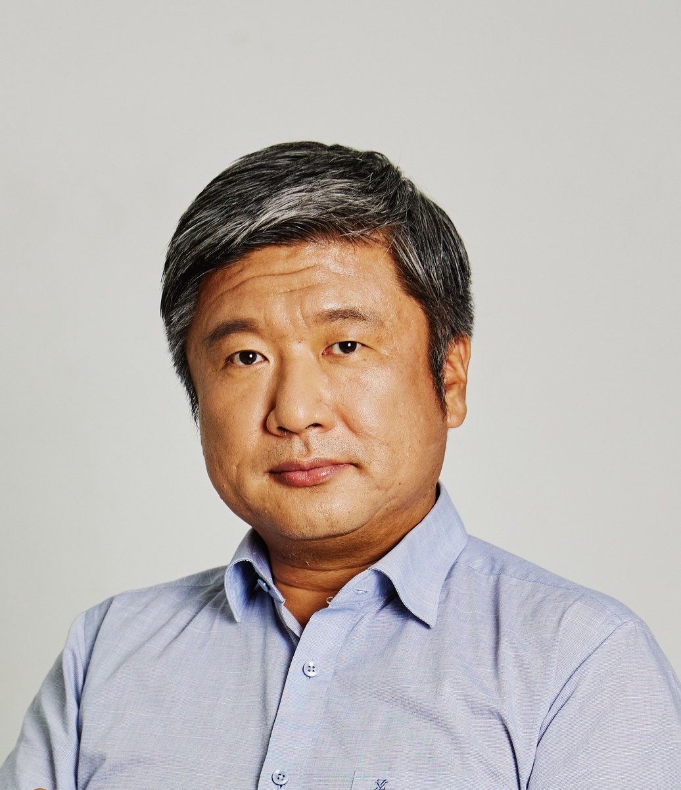
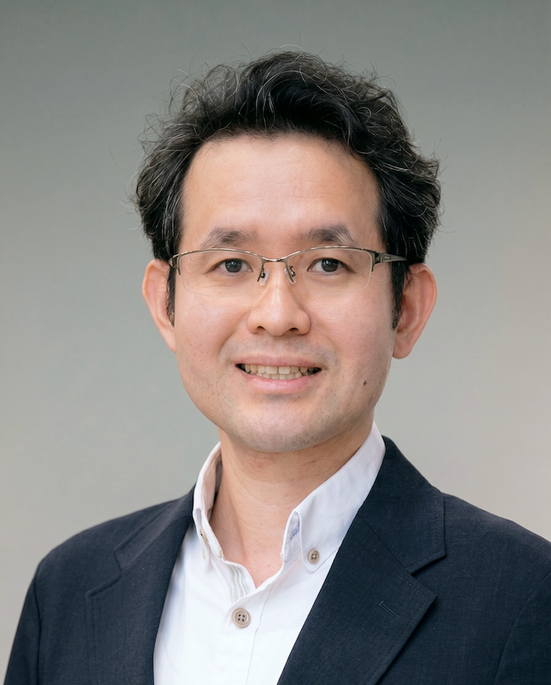

WORKSHOP
Frontiers of XR Technology
Workshop Abstract
Extended reality (XR) is reshaping how people interact with intelligent systems, experience virtual environments, and develop skills for real-world practice. This workshop brings together researchers to explore four complementary directions: situated human–AI interaction, personalized physical experiences bridging real-world vision and virtual interaction, body-motion-based locomotion in virtual reality, and immersive intelligence for medical training and healthcare. Across these topics, the workshop examines how context, embodiment, and movement can inform the design of intuitive and meaningful XR experiences. It aims to foster discussion of emerging research challenges and opportunities, connecting advances in interaction design with practical applications in training and healthcare.
Speakers and Talks

Jens Grubert
Coburg University of Applied Sciences and Arts
XR for Situated Human–AI Interaction
BiographyJens Grubert is Professor of Human-Computer Interaction in the Internet of Things at Coburg University with more than 20 years of academic and industrial experience in extended reality. He is head of the Laboratory for Augmented and Virtual Reality, the Laboratory for Reality Capture, and the Laboratory for Multimodal Human-Computer Interaction. Jens serves as spokesperson for the Center for Responsible Artificial Intelligence at Coburg University and as scientific director of the Technology Transfer Center Upper Franconia: Digital Intelligence in Lichtenfels. He received his habilitation from the University of Passau in 2022, his Ph.D. with distinction from Graz University of Technology in 2015, and his diploma in computational visualistics with highest distinction from Otto von Guericke University Magdeburg in 2009. His current research interests lie at the intersection of extended reality and interactive artificial intelligence. He has served the XR community in various roles, including as co-chair of the IEEE ISMAR Program Committee in 2018, 2019, 2022, and 2023 and as an IEEE ISMAR Steering Committee member from 2019 to 2025. He also regularly serves as a program committee member for both IEEE ISMAR and IEEE VR and has served on the editorial boards of IEEE TVCG and Frontiers in Virtual Reality since 2022.

HyungSeok Kim
Konkuk University
Personalized Physical Experiences: Bridging the gap between real-world vision and virtual interaction
BiographyHyungSeok Kim received a Ph.D. degree in Computer Science in February 2003 at VR Lab, KAIST. He is a Professor at Computer Science and Engineering, Konkuk University, Korea since 2006. Before joining Konkuk University, he was a senior researcher at MIRA Lab, University of Geneva, being involved in research activities on virtual reality. His major research field is real-time interaction in virtual environments and multimodal interaction mechanisms. His current research activities are focused on topics of virtual embodiments and evoking believable experiences in virtual environments.
Huawei Tu
La Trobe University
Body Motion Based Locomotion Design in Virtual Reality
BiographyDr Huawei Tu is a Senior Lecturer at La Trobe University, Australia (equivalent to Associate Professor in the North American academic system). He conducts both fundamental and applied research, combining theory and experimentation to explore how to enhance user experience in VR with HCI technologies. He has published more than 40 papers in leading journals and conferences, including ACM TOCHI, ACM CHI, IEEE TVCG, and IEEE VR. He has served on the program committees of conferences including IEEE VR in 2023, 2025, and 2027, ACM CHI 2025, and IEEE ISMAR 2022. He has received several awards, including the IEEE ISMAR 2025 Honorable Mention Award, the ACM CHI 2020 Honorable Mention Award, and the Fiscal 2017 JASSO Follow-up Research Fellowship.

Khoo Eng Tat
National University of Singapore
Immersive Intelligence for Medical Training and Healthcare
BiographyAssociate Professor Khoo Eng Tat is the Director of the Institute for Design and Engineering Leadership and Assistant Dean (Research and Technology) at the College of Design and Engineering, National University of Singapore. He is also Principal Investigator of the Immersive Reality Lab. His research focuses on AI, immersive intelligence, and the design and application of augmented, virtual, and mixed reality for education, healthcare, and aviation. He collaborates closely with industry partners to lead projects translating advanced technologies into scalable and viable solutions. Prior to his academic career, he was R&D Director of a pioneering VR/AR company. He later co-founded a VR startup and served as Head of Engineering at a venture capital firm.